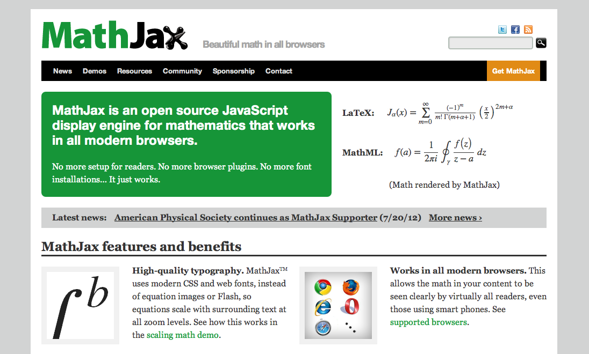

html5slides + MathJax
naoya_t
Aug 9, 2012
naoya_t
Aug 9, 2012

<!DOCTYPE html>
<html>
<head>
<title>Presentation</title>
<meta charset='utf-8'>
<script src='http://html5slides.googlecode.com/svn/trunk/slides.js'></script>
<script type="text/javascript"
src="http://cdn.mathjax.org/mathjax/latest/MathJax.js?config=TeX-AMS_HTML">
</script>
<script type="text/x-mathjax-config">
MathJax.Hub.Config({
tex2jax: {
inlineMath: [['$','$'], ['\\(','\\)']],
displayMath: [['$$','$$'], ['\\[','\\]']],
processEscapes: true
}
});
</script>
</head>
<style>
/* Your individual styles here, or just use inline styles if that’s
what you want. */
</style>
<body style='display: none'>
<article>
<p>$ [ \zeta(s) = \sum_{n=1}^\infty\frac{1}{n^s} ] $</p>
</article>
$ [ \zeta(s) = \sum_{n=1}^\infty\frac{1}{n^s} ] $
<article>
<p>$$ [ \zeta(s) = \sum_{n=1}^\infty\frac{1}{n^s} ] $$</p>
</article>
$$ [ \zeta(s) = \sum_{n=1}^\infty\frac{1}{n^s} ] $$